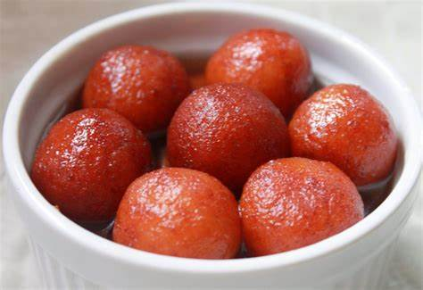

Gulab Jamun

Gulab Jamun: A Sweet Symphony of Delight
Picture this: tiny golden orbs, glistening with a sugary sheen, nestling in a fragrant pool of rose-scented syrup. That’s gulab jamun—a dessert that transcends mere sweetness and ventures into the realm of pure indulgence.
🌟 Texture and Temptation: Imagine sinking your teeth into a soft, pillowy sphere that yields effortlessly. The outer layer, fried to a golden hue, cradles a molten heart—a blend of khoya (reduced milk), cardamom, and love. Each bite is a harmonious dance of tenderness and richness.
🌹 The Rose’s Embrace: Drenched in warm, amber syrup, gulab jamun absorbs the essence of roses. As you lift it to your lips, the fragrance envelops you—a sweet symphony of floral notes that lingers long after the last morsel.
🔥 Comfort and Celebration: Whether served at weddings, festivals, or quiet family gatherings, gulab jamun evokes nostalgia. It’s the dessert that whispers, “You’re home.” It’s the celebration of life’s sweet moments.
Ingredients
- 50 grams paneer (Indian cottage cheese)
- 2 cups canola oil or rapeseed oil (for frying)
- 500 ml boiling water
- 1 slice of lemon
- 2 cups powdered sugar
- 1 1/2 teaspoons powdered green cardamom
- 150 grams mashed khoya (unsweetened milk solids)